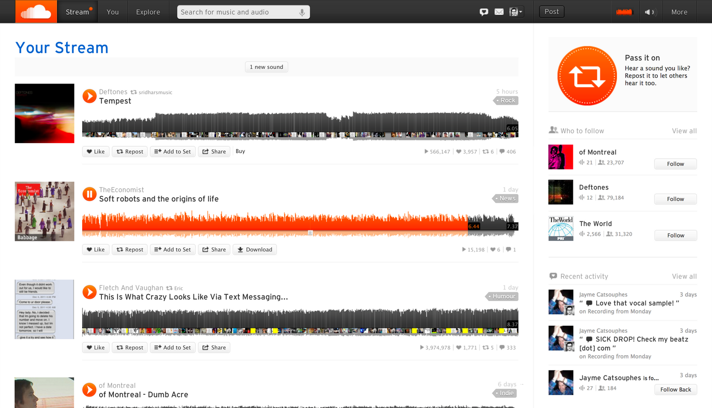
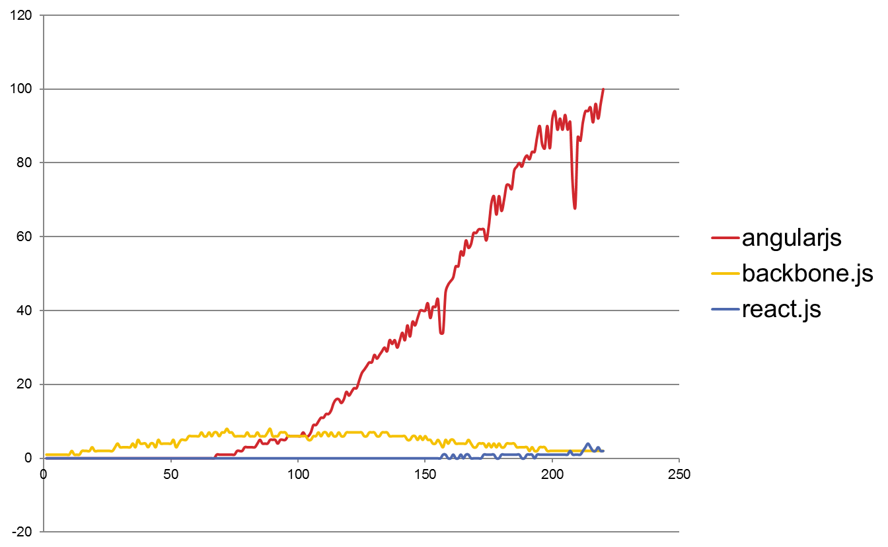
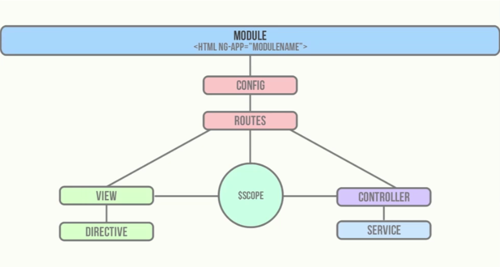
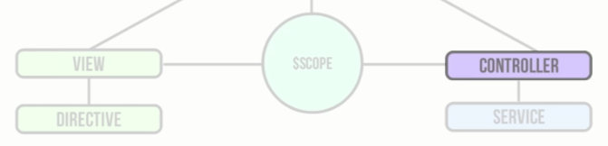
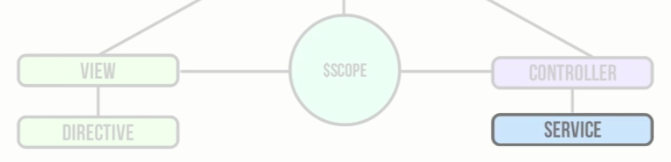
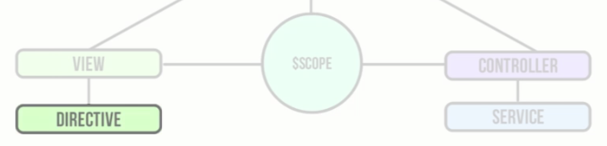

Single Page Applications
with AngularJSRoad Map
- History
- Emergence of SPA's
- AngularJS, an introduction
- Core structures
- Testing!
- Tools & Best practices
1. History
Web 1.0

Web 2.0

Web 3.0
|  |
|
2. Emergence of SPA's
2. Emergence of SPA's


2. Emergence of SPA's
Advantages
- Fluid UX, like desktop applications
- Chunking, only get what you need
- Decoupling
- Job of HTML rendering moves to client
2. Emergence of SPA's


2. Emergence of SPA's
3. AngularJS,
an introduction
3. AngularJS, an intro
= OPEN SOURCE SPA framework
Maintained by
and a HUGE COMMUNITY!

3. AngularJS, an intro
Core principles
- Data-driven
- Declarative
- Separates concerns
- Dependency injection
- Extensible
- Test first, test again, keep testing
A. Data-driven
Demo #1
B. Declarative
Imperative | Declarative |
Tell the application how to do every action.
|
Tell the application what you want to do.
|
C. Separate your concerns

D. Dependency injection
.factory('MyService', ['$http', function ($http) {
return {
getList: function (query) {
return $http.get('http://website.com');
}
}
}]);
E. Extensible
Using custom directives!
- Add new HTML component
- Change the behavior of existing components
E. Test first, test again, keep testing
 +
+ 
= Awesome team for
test driven development!
3. AngularJS, an intro
| 1.3 | Current version |
| 1.4 |
New router for Angular 1 & 2 Better i18n Simpler form handling |
| 2.0 |
End 2015 Major changes, performance! Not backward compatible 1.4 and 1.5 simplify migration |
4. Core structures
4. Core structures
Controller
Service
Directive
4. Core structures
4. Core structures: Controller
- Performs/triggers UI-oriented work
- Works together with Services
- Makes its scope accessible to views
4. Core structures: Controller
Demo #2
4. Core structures: Service
- Singleton
- Holds behavior and state across the application
4. Core structures: Service
Demo #3
4. Core structures: Service
| Different Services |
|
A Service that is a Service?!
4. Core structures: Directive
4. Core structures: Directive
| Two types |
|
| Built-in directives | ng-show, ng-model, ng-class, ng-repeat, ng-switch, ng-view, ng-submit, ... |
| Custom directives | Make your own |
4. Core structures: Directive
Demo #4
5. Testing!
5. Testing!
| Unit tests | Test one unit of code. |
| Integration tests | Test several units together. |
| End-to-end tests | The full user experience is tested. |
5. Testing! Unit & Integration tests
+ 
5. Testing! Unit & Integration tests
Test runner
- Finds unit tests in codebase
- Opens browsers
- Runs tests
- Captures results
5. Testing! Unit & Integration tests
Testing framework
- Defines syntax of tests
- Alternatives: Mocha, QUnit, ...
5. Testing! E-2-E tests
- Built on top of Selenium WebDriver
- Adds Angular-awareness
- No arbitrary waits
- Adds find element by model, binding or repeater
6. Tools &
Best practices
6. Tools & Best practices


Batarang
6. Tools & Best practices
|
Yeoman= Workflow Management Tool
|
6. Tools & Best practices
|
Bower= Package Management tool |
6. Tools & Best practices
|
Grunt= Task Runner
|
6. Tools & Best practices
= JavaScript IDE
- AngularJS autocomplete
- Easy refactoring
- Karma integration
- ...
6. Tools & Best practices

|
6. Tools & Best practices
Batarang